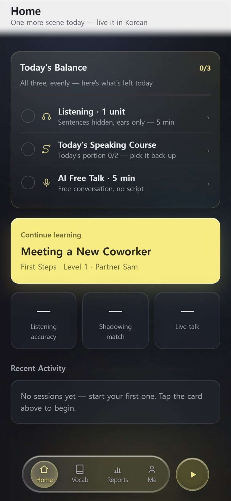
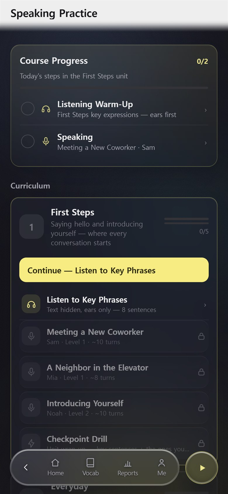
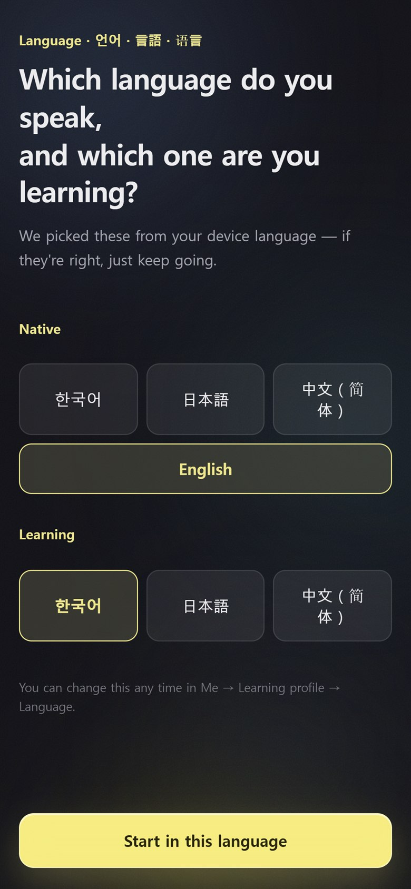
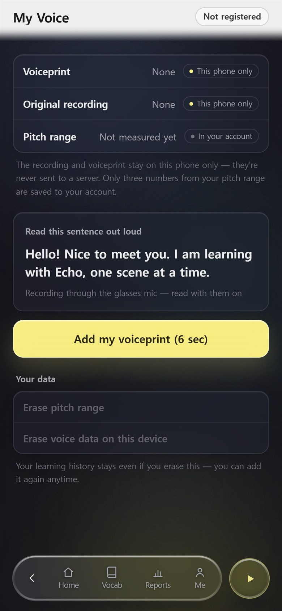

For education · Even Realities G2
ECHO
Your glasses listen to the conversation — and put your next line in front of your eyes.
Freezing mid-sentence usually isn't a vocabulary problem — the moment is just too short. Echo listens through your glasses, shows a line you can actually say right now, and afterwards turns what wobbled into your next practice.
Now in device testing · Even Hub release to follow
What they said · what you could say · what you said — right on the lens.
What ECHO is
ECHO is a language-practice app for Even Realities G2 smart glasses. It helps you get through a real conversation in a language you are still learning — and then turns that conversation into practice.
How it works
One pipeline, three moments — and nothing to tap during the conversation.
They speak
The glasses' microphones pick up what the other person says. A subtitle in your language appears on the lens, so you never have to look at your phone.
You get a line
Echo offers one line you can say right now — in the language you're learning, with the meaning in yours. Say it, and it is echoed back so you know it was heard.
It becomes practice
After the session, the phrases that didn't come out are collected and built into a new scenario you can rehearse with an AI partner — on the glasses or on the phone.
What you get
The next line, right in front of you
During a real conversation, Echo shows what the other person said and offers a line you can use right now — on the glasses, so you never look at your phone.
Free talk with an AI partner
Unscripted conversation. If the connection drops, Echo reconnects and remembers what you were talking about.
Practice — listening and shadowing
Scenario-based drills with immediate feedback on pronunciation and phrasing.
What wobbled becomes your next lesson
After each session, Echo collects the phrases that didn't come out and builds a scenario around them.
It knows your voice
One six-second reading is enough to separate your lines from theirs. Voice data stays on your device, and you can delete it at any time.
Your language, and the one you're learning
Use Echo in Korean, Japanese, or Chinese to learn English — or use it in English to learn Korean, Japanese, or Chinese. Choose once on first run and everything follows.
On the lens
The glasses show a few short lines in green — that is all you need during a conversation.
Frames are the app's own lens output (576 × 288 px), captured in the Even simulator. Korean shown as the language being learned.
On your phone
The phone is for choosing and looking back. During a conversation, it stays in your pocket.




Languages & requirements
Use Echo in Korean, Japanese, or Chinese to learn English — or use it in English to learn Korean, Japanese, or Chinese.
Requires — Even Realities G2 · Even app 2.2.6 or later · internet connection. Japanese and Chinese are marked beta until native-speaker review is complete.
Your data, in short
Everything on this page can be read without signing in. Here is what Echo does with your data — the full policy is one click away.
- Audio is never stored. Only the recognized text remains. During recognition, audio is sent to speech-recognition providers — the policy lists each one.
- The data used to recognize your voice stays on your device. Delete it any time in Me → My Voice.
- Conversation text and learning records are tied to your account so you can look back. Delete them all in Me → Data.
- Live conversation picks up nearby speech. Tell the people you're talking with and get their consent before turning it on.
- Signing in with Google is optional. It lets your records follow you to a new device. Echo receives only your email address from Google and uses it to identify your account — nothing else is read from your Google account.
Contact
ECHO is built by an independent developer in Korea.
For education · Even Realities G2
ECHO
안경이 대화를 듣고, 다음 한 마디를 눈앞에 띄워줍니다.
말이 안 나오는 건 몰라서가 아니라 그 순간이 너무 짧아서입니다. 에코는 안경으로 대화를 들으며 지금 쓸 수 있는 표현을 자막으로 띄워주고, 끝나면 무엇이 흔들렸는지 정리해 다음 연습으로 이어줍니다.
실기기 테스트 중 · Even Hub 출시 예정
상대가 한 말 · 지금 할 수 있는 말 · 내가 한 말 — 렌즈 위에 바로.
ECHO는 무엇인가
ECHO는 Even Realities G2 스마트 안경용 외국어 회화 연습 앱입니다. 아직 배우는 중인 언어로 실제 대화가 굴러가게 돕고, 그 대화를 다시 연습으로 돌려줍니다.
어떻게 동작하나
하나의 흐름, 세 장면 — 대화 중에 누를 것은 없습니다.
상대가 말하면
안경 마이크가 상대의 말을 듣고, 내 언어 자막이 렌즈에 뜹니다. 폰을 볼 필요가 없습니다.
다음 한 마디
지금 쓸 수 있는 표현 하나를 배우는 언어로 크게, 내 언어 뜻을 작게 띄웁니다. 말하면 인식된 내용이 그대로 되돌아와 "제대로 들렸구나"를 알 수 있습니다.
연습이 됩니다
대화가 끝나면 안 나왔던 표현이 정리되고, 그 표현으로 AI 파트너와 연습할 시나리오가 만들어집니다 — 안경에서도, 폰에서도.
무엇을 할 수 있나
눈앞에 뜨는 다음 한 마디
실전 대화 중 상대의 말을 안경 자막으로 보여주고, 지금 쓸 수 있는 표현을 함께 띄웁니다. 폰을 볼 필요가 없습니다.
AI 파트너와 진짜 수다
대본 없는 자유 대화. 끊기면 알아서 다시 이어지고, 앞의 대화를 기억합니다.
연습 — 듣기와 쉐도잉
상황별 시나리오로 듣고 따라 말하며, 발음과 표현을 즉시 확인합니다.
흔들린 표현이 다음 연습이 됩니다
대화가 끝나면 무엇이 안 나왔는지 정리되고, 그 표현으로 맞춤 시나리오가 만들어집니다.
내 목소리를 구분합니다
6초 낭독 한 번이면 내 말과 상대 말을 갈라 기록합니다. 목소리 데이터는 이 기기에만 있고 언제든 지울 수 있습니다.
쓰는 말과 배우는 말을 고릅니다
한국어·일본어·중국어로 쓰면 영어를 배우고, 영어로 쓰면 한국어·일본어·중국어 중 하나를 배웁니다. 첫 실행에서 한 번 고르면 안내도 대화도 그 언어로 맞춰집니다.
렌즈 위에서
안경에는 초록 글자 몇 줄만 뜹니다 — 대화 중에 필요한 건 그게 전부입니다.
이븐 시뮬레이터에서 앱이 실제로 렌즈에 그린 화면(576 × 288 px)입니다. 배우는 언어가 한국어인 경우의 예시입니다.
폰에서
폰은 고르고 돌아보는 곳입니다. 대화 중에는 주머니에 있습니다.
폰 화면은 영어 UI입니다.
언어와 필요한 것
한국어·일본어·중국어로 쓰면 영어를 배우고, 영어로 쓰면 한국어·일본어·중국어 중 하나를 배웁니다.
필요한 것 — Even Realities G2 · 이븐 앱 2.2.6 이상 · 인터넷 연결. 일본어·중국어는 원어민 검수 전이라 베타로 표시합니다.
내 데이터, 짧게
이 페이지는 로그인 없이 읽을 수 있습니다. 에코가 데이터를 어떻게 다루는지 요약했고, 전문은 한 번 눌러 볼 수 있습니다.
- 녹음 파일은 저장하지 않습니다. 인식된 텍스트만 남습니다. 인식 과정에서 음성은 음성 인식 업체로 전송되며, 방침에 업체가 하나씩 적혀 있습니다.
- 내 목소리를 알아보기 위한 데이터는 이 기기에만 있습니다. 나 → 내 목소리에서 언제든 지울 수 있습니다.
- 대화 텍스트와 학습 기록은 돌아볼 수 있도록 계정에 묶여 저장됩니다. 나 → 데이터에서 전부 지울 수 있습니다.
- 실전 대화는 주변 사람의 말을 인식합니다. 켜기 전에 상대방에게 알리고 동의를 받아주세요.
- Google 로그인은 선택입니다. 기기를 바꿔도 기록이 이어지게 해줍니다. 에코가 Google에서 받는 것은 이메일 주소뿐이고 계정 식별에만 씁니다. Google 계정의 다른 정보는 읽지 않습니다.
문의
ECHO는 한국의 1인 개발자가 만듭니다.
For education · Even Realities G2
ECHO
メガネが会話を聞き取り、次のひと言を目の前に映します。
言葉が出てこないのは知らないからではなく、その一瞬が短すぎるからです。エコーはメガネで会話を聞き取り、いますぐ使えるひと言を字幕で映し、終わったあとは詰まったところを次の練習につなげます。
実機テスト中 · Even Hub で公開予定
相手の言葉 · いま言えるひと言 · 自分が言った言葉 — レンズの上に。
ECHO とは
ECHO は Even Realities G2 スマートグラス向けの語学会話練習アプリです。まだ学習中の言語での実際の会話を前に進める手助けをし、その会話を練習に変えます。
仕組み
ひとつの流れ、三つの場面 — 会話中に押すものはありません。
相手が話すと
メガネのマイクが相手の言葉を聞き取り、あなたの言語の字幕がレンズに映ります。スマホを見る必要はありません。
次のひと言
いま使える表現をひとつ、学習中の言語で大きく、あなたの言語の意味を小さく映します。話すと認識された内容がそのまま返ってきて、「ちゃんと聞こえた」とわかります。
練習になります
会話が終わると出てこなかった表現が整理され、それを使って AI パートナーと練習するシナリオが作られます — メガネでも、スマホでも。
できること
次のひと言が、目の前に
実際の会話中、相手の言葉をメガネに字幕で表示し、いま使えるひと言を一緒に映します。スマホを見る必要がありません。
AIパートナーと本当の雑談
台本なしの自由な会話。切れても自動でつなぎ直し、前の話を覚えています。
練習 — 聞き取りとシャドーイング
場面別のシナリオで聞いて話し、発音と表現をその場で確認します。
詰まった表現が次の練習になります
会話が終わると出てこなかった言葉が整理され、それを使ったシナリオが作られます。
あなたの声を聞き分けます
6秒の音読ひとつで、自分の言葉と相手の言葉を分けて記録します。声のデータはこの端末の中だけにあり、いつでも消せます。
使う言語と、学ぶ言語を選べます
日本語・韓国語・中国語で使えば英語を学び、英語で使えば日本語・韓国語・中国語のどれかを学びます。初回に一度選べば、案内も会話もその言語に合わせて動きます。
レンズの上で
メガネには緑の文字が数行だけ映ります — 会話中に必要なのはそれだけです。
Even シミュレーターでアプリが実際にレンズに描いた画面（576 × 288 px）です。学習中の言語が韓国語の場合の例です。
スマホで
スマホは選ぶところ、振り返るところです。会話中はポケットの中にあります。
スマホ画面は英語 UI です。
言語と必要なもの
日本語・韓国語・中国語で使えば英語を学び、英語で使えば日本語・韓国語・中国語のどれかを学びます。
必要なもの — Even Realities G2 · Even アプリ 2.2.6 以上 · インターネット接続。日本語と中国語はネイティブ校閲前のため、ベータと表示しています。
あなたのデータ、手短に
このページはログインなしで読めます。エコーがデータをどう扱うかの要約です — 全文はワンクリック先にあります。
- 録音ファイルは保存しません。 認識されたテキストだけが残ります。認識の過程で音声は音声認識事業者に送信され、ポリシーに事業者を一つずつ記載しています。
- あなたの声を聞き分けるためのデータはこの端末の中だけにあります。 わたし → わたしの声 からいつでも消せます。
- 会話のテキストと学習記録は、あとで振り返れるようアカウントに紐づけて保存します。 わたし → データ からすべて消せます。
- 実戦会話は周囲の人の発話を認識します。 使う前に相手に伝え、同意を得てください。
- Google ログインは任意です。 端末を変えても記録が引き継がれます。エコーが Google から受け取るのはメールアドレスだけで、アカウントの識別にのみ使います。Google アカウントの他の情報は読み取りません。
お問い合わせ
ECHO は韓国の個人開発者が作っています。
For education · Even Realities G2
ECHO
眼镜听着对话，把你下一句话送到眼前。
话说不出来，往往不是因为不会，而是那一瞬间太短。Echo 通过眼镜听对话，把你现在就能用的一句话显示出来，结束后再把卡住的地方整理成下一次练习。
真机测试中 · 即将在 Even Hub 上架
对方说的 · 你可以说的 · 你说出的 — 就在镜片上。
ECHO 是什么
ECHO 是一款面向 Even Realities G2 智能眼镜的外语口语练习应用。它帮你用还在学的语言把真实对话进行下去，再把这些对话变成练习。
怎么用
一条流程，三个时刻 — 对话中不需要按任何东西。
对方开口
眼镜的麦克风听到对方的话，你的语言的字幕出现在镜片上。不用低头看手机。
下一句话
Echo 给出一句你现在就能用的话：学习语言的原句放大，你的语言的意思缩小显示。你说出后，识别到的内容会回显出来，让你知道"听到了"。
变成练习
对话结束后，没说出口的表达会被整理出来，并据此生成和 AI 伙伴练习的场景 — 在眼镜上，也在手机上。
能做什么
下一句话，就在眼前
真实对话中，Echo 把对方的话以字幕显示在镜片上，并给出你现在就能用的一句话。不用低头看手机。
和 AI 伙伴真正地聊
没有剧本的自由对话。断了会自动接上，并且记得刚才聊过什么。
练习 — 听力和跟读
按场景的练习，发音和表达当场就有反馈。
卡住的表达会变成下一次练习
一段对话结束后，没说出口的表达会被整理出来，并据此生成新的场景。
它能分辨你的声音
一次 6 秒朗读，就能把你说的话和对方说的话分开记录。声音数据只保存在这台设备上，随时可以删除。
选择你说的语言和要学的语言
用中文、韩语或日语使用就学英语；用英语使用就在中文、韩语、日语里选一个学。首次启动时选一次，之后的引导和对话都会跟着走。
在镜片上
眼镜上只显示几行绿色文字 — 对话中需要的就这些。
这是应用在 Even 模拟器中实际绘制到镜片上的画面（576 × 288 px）。示例中学习的语言是韩语。
在手机上
手机用来选择和回顾。对话时，它待在口袋里。
手机界面为英文。
语言与要求
用中文、韩语或日语使用就学英语；用英语使用就在中文、韩语、日语里选一个学。
需要 — Even Realities G2 · Even 应用 2.2.6 或更高 · 网络连接。日语和中文尚未经母语者审校，标注为测试版。
关于你的数据，简短版
本页面无需登录即可阅读。这里是 Echo 如何处理你的数据的摘要 — 完整政策点一下就能看到。
- 不保存录音文件。 只保留识别后的文字。识别过程中音频会发送给语音识别服务商，政策里逐一列出了这些服务商。
- 用来识别你声音的数据只保存在这台设备上。 可随时在 我 → 我的声音 中删除。
- 对话文字和学习记录会绑定到你的账户保存，方便回顾。可在 我 → 数据 中全部删除。
- 实战对话会识别周围人的说话。 开启前请告知对方并取得同意。
- Google 登录是可选的。 它能让你的记录在换设备后继续使用。Echo 从 Google 只获取电子邮箱地址，仅用于识别账户，不会读取你 Google 账户的其他信息。
联系
ECHO 由韩国的独立开发者制作。